In dit document komen alle aantekeningen en aanpassingen te staan die ik gemaakt heb.
SPRINT 1
College Webtech, 3-9-2024
Een persoon die iets wilt zoeken stuurt een HTTP request, vanaf de server komt er een HTTP response.
Een document objes model (DOM) is de structuur, het verbind de websites met hun scripts.
HTML element. foto erin zetten van mijn getekende uitleg.
Daily checkout, woensdag 4-9-2024
Ik heb vandaag een breakdown schets gemaakt van mijn visitekaartje. En ik ben begonnen met dit bestand maken.
Studievragen:
1. Wat is het nut van een breakdown schets?
2. Waar moet je op letten als je een breakdownschets maakt?
3. Waar moet je beginnen met een nieuwe TML?
Ik wil nog uitzoeken hoe ik meer CSS kan toevoegen aan mijn visitekaartje.
Daily checkout, donderdag 5-9-2024
Wat heb ik vandaag gedaan?
Ik heb vandaag geprobeerd om met javascript een werkende button te maken, ik wil dat de tekst van kleur veranderd als er op de
button geklikt wordt. Het is me nog niet helemaal gelukt dus ik ga thuis nog even verder puzzelen.
Studievragen:
1. Wat maakt javascript anders dan HTML en CSS?
2. Wat zijn de mogelijkheden met Javascript?
3. Wat wil ik verder nog uitzoeken van Javascript?
Niet vergeten om:
- Ik wil graag een samenvatting maken van de leerstof van deze week
- visite kaartje afmaken voor morgen
Daily checkout, maandag 9-9-2024
Wat heb ik vandaag gedaan?
Met codepen in CSS codes gewerkt. Een grid template gemaakt.
Drie dingen die ik geleerd heb:
1. Display: grid;
2. hoe je een grid gap maakt
3. hoe je je grid kan aanpassen aan de breedte van de beeldscherm
Twee dingen die ik interessant vind:
- Grid maken
- Uitzoeken waar het mis gaat
Daily checkout, woensdag 11-9-2024
Wat heb ik vandaag gedaan?
We hebben vandaag gekeken hoe je een indeling kan maken aan de hand van pixels op schermen. Aan de hand daarvan
hebben we een breakdown schets gemaakt en ben ik gaan coderen in mijn eigen geforkte bestand van onze squadpage.
Drie studievragen:
1. Waarom begin je met ontwerpen altijd met een small formaat schets en werk je hem dan verder uit naar een large?
2. Hoe weet je hoe veel pixels een kolom moet hebben?
3. Hoe kan je het makkelijkst een bestand kopieeren en er in verder werken?
bewijs materiaal
Daily checkout, maandag 16-9-2024
wat heb ik vandaag gedaan?
Ik heb vandaag meegeschreven bij het college over visuele hierarchie, daarna heb ik de figma oefeningen gedaan en
verschillende ontwerpen gemaakt voor de squad page. Ik heb 9 verschillende gemaakt en uiteindeljik na het overleg
heb ik de definitieve uitgewerkt. Daarin heb ik ook de visuele hierachie en een breakdown schets van gemaakt.
Drie dingen die ik heb geleerd:
1. grid in Figma gebruiken
2. een website ontwerp maken in figma
3. visuele hierarchie snappen en toepassen
bewijs materiaal:
Daily checkout, dinsdag 17-9-2024
wat heb ik gedaan vandaag?
We hebben met transform en transitions gewerkt in CSS, eerst hadden we een uitleg waar ik mee heb getyped.
Daarna heb ik de oefeningen gemaakt. Ik vind de 3d opdrachten stiekem makkelijker dan de 2d opdrachten.
Bewijsmateriaal
Voorbeeld van mijn rotating kubus.
Daily checkout, woensdag 18-9-2024
Wat heb ik gedaan vandaag?
Ik heb met stella en kate gekeken wat er nog gedaan moet worden aan de website. Daarvan heb ik issues gemaakt zodat we het
duidelijk op een rijtje hebben wat er nog gedaan moet worden. Ik heb verder een stuk in de Read me geschreven van onze Squadpage.
We hebben vandaag uitgezocht hoe we samen vanuit 1 document kunnen werken.
Bewijsmateriaal
SPRINT 2
The Client
Daily checkout, maandag 23-9-2024
wat heb ik vandaag gedaan?
Ik heb met mijn nieuwe groepje een briefing voorbereid voor de nieuwe klant. Nadat we hadden overlegt wat we te weten
willen komen hebben we met het groepje uit de G klas de briefing gehad. Het was veel informatie dus ik heb meegetyped.
Daarna hebben we met ons groepje een debriefing gemaakt.
Drie dingen die ik heb geleerd:
1. Hoe een briefing werkt
2. Hoe een debriefing werkt
3. Hoe je je voorbereid om een briefing te houden
Twee leer vragen voor deze week:
1. Hoe gaat het prototype eruit zien?
2. Hoe gaan we het prototype omzetten naar een HTML?
Daily checkout, woensdag 25-9-2024
Wat heb ik vandaag gedaan?
We hebben in de ochtend een uitleg gekregen over prototyping. Ik heb meegetekend met de oefeningen en ik heb zonder
liniaal een vierkant van precies 5,0 cm getekend. En we hebben geoefend met duidelijke buttons tekenen.
Daarna heb ik twee sitemaps getekend. Een van de bestaande situatie en 1 van de ideale situatie.
Ik heb van de stekjes pagina een Wireframe getekend. Van de 1.1 en 1.1.1 pagina heb ik ze uitgetekend.
Omdat ik geen interactie heb in de pagina zonder dat het naar een andere pagina gaat heb ik geen wireflow gemaakt.
Daarna heb ik m'n wireframe in figma gemaakt, om een beter idee te krijgen hoe ik het wil gaan ontwerpen.
Drie dingen die ik heb geleerd vandaag:
1. Sitemap maken
2. Wireframe schetsen
3. Perfect vierkant van 5 cm tekenen
Bewijsmateriaal:
Sitemap:
Wireframe:
Oefeningen uit de les:
Daily checkout, vrijdag 27-9-2024
Wat heb ik gedaan vandaag?
Ik heb samen met Rapha feedback gegeven op de beginsels van de code van Kyan en Daan. Ik heb
gekeken of ik met mijn eigen feedback al aan de gang kan.
Drie dingen die ik over HTML geleerd heb:
1. Minder witregels geeft meer overzicht
2. Met een contrast checker kan je kijken of je contrast goed is
3. Met 1 kleursysteem tegelijk werken en die in je root zetten
Zorg dat er genoeg ruimte is tussen de stukjes code waardoor het makkelijk leesbaar blijft. Laat de code ook steeds inspringen.
Zo is en blijft het duidelijk, ook voor andere mensen die in je code kijken.
2. CSS en HTML in de zelfde volgorde:
Als je je CSS en HTML in de zelfde volgorde schrijf kan je makkelijk vinden wat bij wat hoort. Ik heb momenteel
nog niet genoeg CSS om het aan te kunnen tonen, dat komt er nog aan.
3. Media queries nesten:
Je zorgt ervoor dat de media queries plaatst in het kopje waar ze iets voor moeten doen. Ik heb momenteel nog niet
genoeg media queries om het aan te kunnen tonen, dat komt er nog aan.
Twee dingen omm leesbaarheid te verbeteren
1. Contrast:
Zorg dat je contrast hoog genoeg is. Wit op beige is bijvoorbeeld niet te lezen. image Door een groene achtergrond
te gebruiken, kan ik zowel wit als zwarte letters gebruiken.
2. lettergrootte:
Zorg ervoor dat de letters niet te klein zijn, maar ook niet te groot. Als de letters te klein zijn kunnen de mensen
met wat minder goed leesvermogen het niet meer lezen. Als de letters te groot zijn is het juist weer lastig om te zien
welke letters samen een woord vormen en waar het volgende woord begind.
In mijn eigen code
Ik ga er beter op letten dat ik alles laat inspringen en genoeg adem ruimte geef. Als ik lekker aan het typen ben wil
ik nog wel is vergeten om met tabs te werken. Ik ga er ook goed op letten dat ik niet teveel ruimte tussen de kopjes
code gebruik, dat kreeg ik ook als tip tijdens de feedback ronde.
SPRINT 3
All Human
Daily checkout,maandag 14-10-2024
Wat heb ik vandaag gedaan?
Ik heb met het groepje van de opdrachtgever besproken wat de feedback was van de sprintreview. Daarna heb ik de
sprintplanning van sprint 3 doorgelezen. Ik ben met de deel taak 'WCAG Audit' aan het werk gegaan. Ik ga het maken
over de website van mijn werk, Bakker van Maanen.
Wat moet ik nog doen?
Ik heb de lighthouse test gedaan en heb deze omschreven. Ik moet nog de handmatige test doen en aangeven
hoe dit opgelost kan worden.
Daily Checkout, woensdag 16-10-2024
Wat heb ik vandaag gedaan?
Ik heb mn lighthouse onderzoek van de website van Bakker van Maanen gepresenteerd en er feedback opgekregen.
Daarna heb ik aan de All Human - Accessible Website
opdracht gewerkt. Ik heb een bestand aangemaakt waar ik alle opdrachten in uit heb gevoerd en getest. Ik heb de polypane
brouwser gedownload, ik heb een beetje getest hoe het werkt en wat de handigste functies zijn.
Drie dingen die ik heb geleerd:
Wat de verschillende alt functies zijn.
Hoe je met Polypane kan zien wat bijv. je tab volgorde is.
Als je een
De 6 onderwerpen uit de All Human - Accessible Website opdracht:
links, je kan beinvloeden wat mensen automatisch kunnen doen met een link door de download of de target="_blank" toe te voegen in je link
afbeeldingen, als je in de alt tekst van je afbeelding zet waar de afbeelding over gaat, snap je het ook nog als de afbeelding niet te zien is.
labels, het is heel handig om bij bijvoorbeeld een checkbox te kunnen regelen dat je op de gehele naam kan klikken en niet alleen op het vakje.
progressive disclosure, met de details kan je informatie tijdelijk verbergen en weer open klappen.
Popups, een popup kan je maken door: button popovertarget="popup">Open iets /button dialog popover id="popup" en hem dan weer afsluiten met / dialog .
Headings, het is heel handig om te kunnen zien wat je "inhoudsopgave" van de pagina is, dit kan je aan de headers doen als je het goed doet. In polypane kan je via:
rechtermuisklik, info, outline selecteren welke inhoud van de pagina je wilt zien en dan heb je een heel mooi overzicht van de kopjes van de website.
Daily checkout,vrijdag 18-10,2024
Wat heb ik vandaag gedaan?
Ik heb met Luuk en Arman een code revieuw gegeven aan rick. We hebben samen meerdere issues ingeschoten en hem daarmee gelijk tips gegeven.
Daarna heb ik mijn learning journal bijgewerkt en heb ik samen met Arman uitgezocht hoe ik mijn header afbeelding kon fixen. Daarna ben
ik naar de we love web college van Dion gegaan. Ik vond het heel interessant omdat hij echt gekke dingen doet met het web en je eigenlijk
bijna duizelig wordt als je naar zijn website kijkt.
Uitbreiding code review:
Lighthouse test doen, in je devTools kan je een kopje Lighthouse aanklilkken, deze controleert dan je website en geeft je feedback. Hierna moet je altijd nog wel handmatig andere testjes doen want hij is niet volledig.
Screen reader, met een screen reader kan je horen wat er wordt voorgelezen van je website als mensen dit gebruiken omdat ze slecht zicht hebben. Dit kan je via PolyPane (zou moeten kunnen, mij is het nog niet gelukt) of een ander externe bron testen.
Keyboard navigatie, dit kan je testen door met je tab toets door de website te klikken. Hierdoor kan je zien hoe toegangkelijk je website is voor mensen die alleen hun toetstenbord gebruiken om over het web te navigeren.
Headings en landmarks, door te controleren in de code of de h1, h2, h3.... niveaus in de juiste volgorde staan, dit is een soort van je inhoudsopgave van de webpagina en daarom is het fijn als het in 1 oogopslag te zien is.
Uitbreiding code review whiteboard:
We love WEB, Dion Pieters vrijdag 18-10-2024
Er zijn een aantal vragen die je aan jezelf kan stellen als je begind met je portfolio opzetten:
Waar ben je begonnen?
Waar sta je nu?
Gaat het uberhaupt een beetje bezocht worden?
Ga ik het zelf ontwerpe of laat ik het doen?
Is je eigen portfolio het beste of het slechtste project wat je ooit gaat opleveren?
Dit is een vraag die Dion ons stelde, ik heb hier over nagedacht en ik denk dat het uiteindelijk het beste project is wat je ooit
maakt. Misschien is het ontwerp niet gelijk het mooiste ontwerp, maar de inhoud van je portfolio is uiteindelijk wel het werk waar
je het meest trost op bent.
Moet een designer kunnen developpen en een developer kunnen designen?
Volgens Dion, nee. Hij vergeleek het met het Operna House in Sydney. “Degene die dit heeft ontworpen voor de architect had totaal geen
kennis van constructie en dit is volgens mij het meest toonaangevende gebouw geworden In de geschiedenis architectuur. Waarom denk je dat?
Omdat deze man totaal geef ik vakinhoudelijk kennis had van constructie heeft hij het meest lijpe dingen bedacht. De mensen die wel verstand
hebben van constructie hebben daarna gezecht, oh misschien kunnen we dat zo doen of dit nog een beetje aanpassen zodat het wel mogenlijk is.
Ik vind het design op web ook vaak dat als ik een designer tref die ook kan coderen dat hij toch vaak gaat denken dat hij denkt van hé maar
wacht eens volgens mij kan dat helemaal niet. De mensen zonder kennis denken hierin vaak zonder een limiet of het wel of niet mogenlijk is.
Natuurlijk zijn er ook ontwerpers die kunnen coderen die niet in dat limiet denken.
“Er is niks sexy's aan een pfd, dat moet je lekker aan een pfd reader overlaten. Een website moet interactief zijn!”
Wat voor projecten laat je nou zien in je portfolio?
Je laat altijd projecten zien waar je trots op bent en wat je leuk vond om te maken, als mensen een bepaald soort project zien op je
portfolio is de kans groter dat je mensen aantrekt die graag zo'n soort project willen hebben.
Ik heb meegedaan met het college over kleur en contrast. We hebben met verschillende brillen gekeken, hoe mensen met
minder goed zicht de wereld en dan vooral het web zien. Dit hebben we daarna op het whiteboard geschreven.
Er zijn meer soorten zicht disabilytys dan ik dacht
Hoe je met Colour Contrast Analyser van TPGI een kleur contrast test doet
Waarom het altijd belagnrijk is om te testen hoe je contrast is ookal kan je het zelf wel goed zien.
Daily checkout, woensdag 23-10-2024
Drie dingen die ik vandaag heb gedaan:
Met de eerste jaars uit de bieb in bloei groep besproken hoe we de sprintreview van morgen gaan aanpakken en wat we willen bespreken opgeschreven
De ReadMe van m'n bieb in bloei website aangepast
Op een rijtje gezet voor mezelf wat er nog gedaan moet worden voor morgen
Twee verbeteringen in m'n ReadMe ten opzichte van vorige keer:
Ik heb een beter uit kunnen leggen wat ik in de afgelopen periode heb gedaan
Ik heb met code aan kunnen tonen wat ik heb gedaan. (Vorige sprint had ik namenlijk nog geen code laten zien)
Een ding wat ik anders ga aanpakken in de komende sprintreview:
Ik ga specifieker feedback vragen over wat de opdrachtgever vind van mijn ontwerp en wat haar verdere verwachtingen van mij (ons) zijn.
SPRINT 4
Look & Feel
Daily checkout, maandag 11-11-24
Wat heb ik vandaag gedaan?
Ik heb mijn feedback van de midterm assesment nog is doorgelezen, zo had ik weer goed voor ogen waar ik me de komende weken op wil focussen. Daarna heb ik de
sprintplanning doorgenomen en in mijn projectboard gezet wat de belangrijkste punten in deze sprint zijn. We hebben met ons 1H Bieb in Bloei team besproken hoe
de afgelopen sprint review was gegaan, daarna zijn we met de huisstijl van de website aan de slag gegaan. We hebben in Figma alle onderdelen van de website
verzameld waaronder stylen van, buttons, lettertypens, headings, afbeeldingen etc.
Drie dingen die ik heb geleerd:
Wat we gaan behandelen deze sprint
In hoeveel dingen een huisstijl doorgetrokken kan worden
Hoe je het begin van een stylesheet op kan zetten, door beeldmateriaal en informatie te verzamelen
Hoe gaan we de teamopdracht maken?
Samenwerken in en na de les en zorgen dat iedereen een gelijk deel kan doen, zodat niet een iemand het helemaal alleen moet/gaat doen.
In de teams chat gaan we afspraken bijhouden die gaan over de manier van samenwerken, wie wat gaat doen en wie wanneer in het bestand gaat werken.
Zo kan er geen onduidelijkheid ontstaan en hebben we ook het probleem niet dat er twee mensen tegelijk in het bestand werken waardoor we geen dubbel werk gaan doen.
Bewijsmateriaal
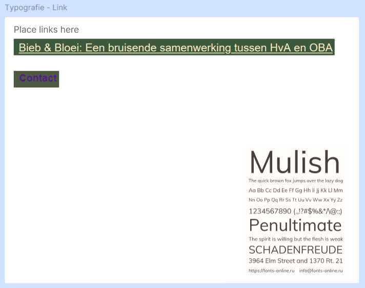
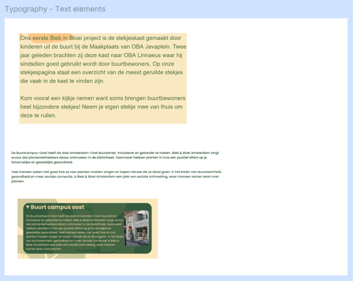
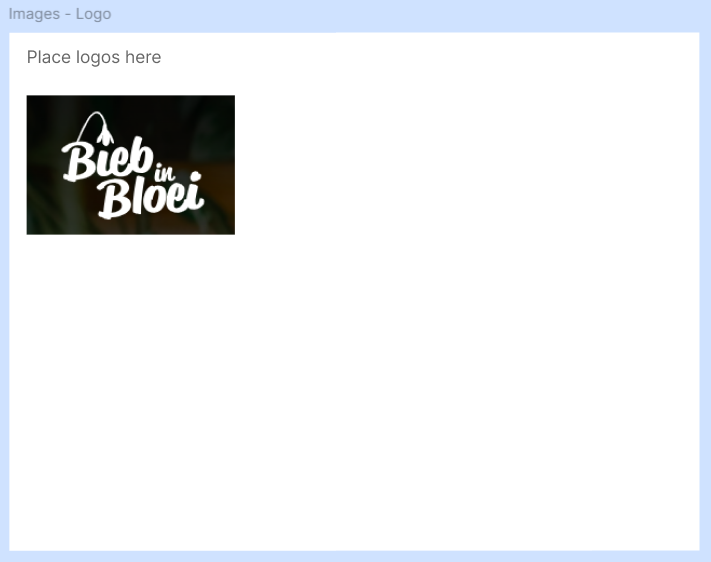
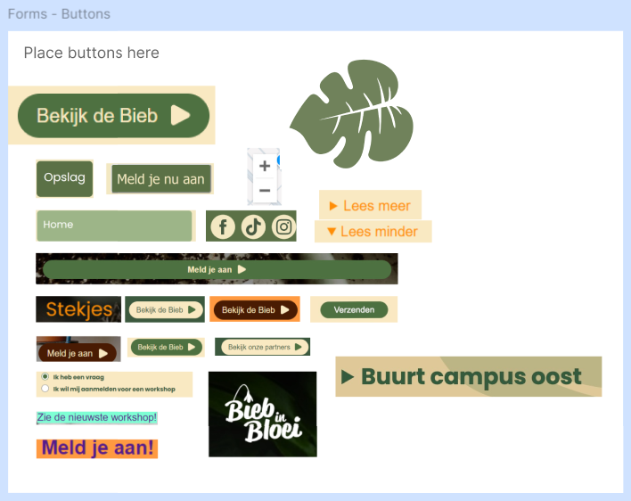
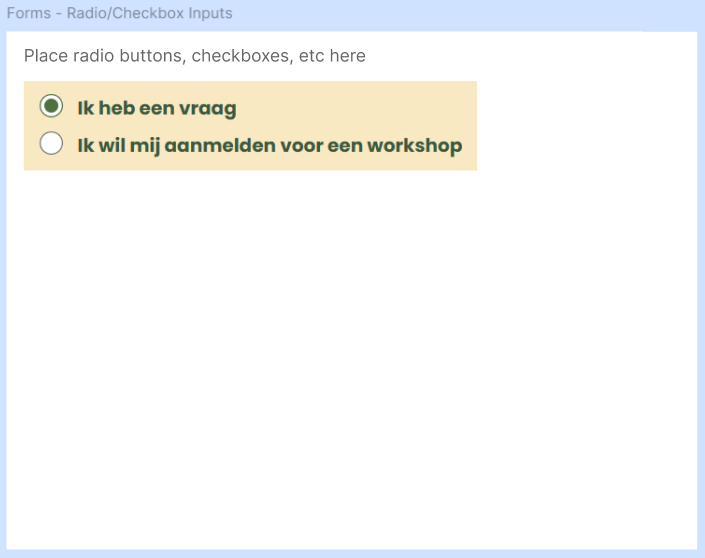
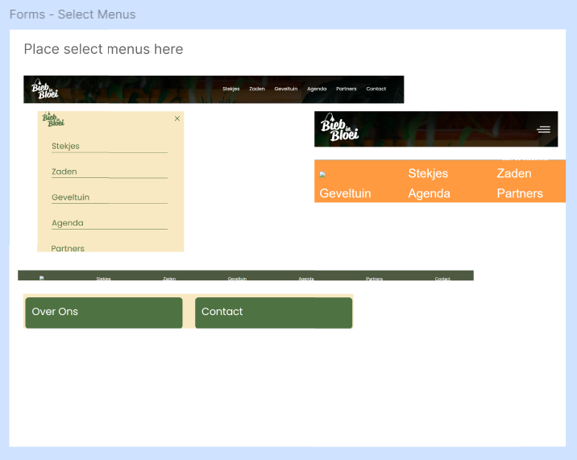
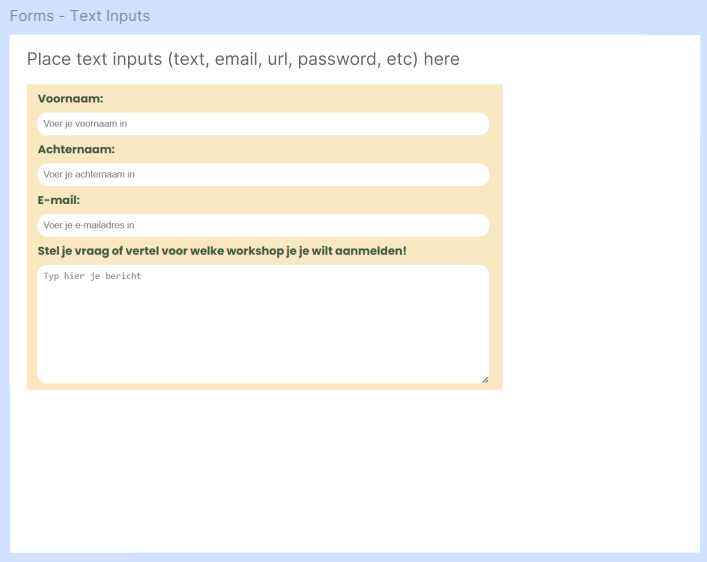
Daily checkout, dinsdag 12-11-24
Wat heb ik gedaan vandaag?
Ik heb meegedaan met de figma workshop van Wes Oudshoorn.
Ik heb 3 landing pages gemaakt, die je hier kan zien.
Ik vind het heel interessant om te zien wat je allemaal kan met figma. Ik heb veel met InDesign gewerkt en ik vind het wel iets op elkaar lijken. Ik merk nu dat ik heb leren werken met de desktop versie ipv via google dat ik ook sneller ben
in het vinden en goed toepassen van de tools die ik nodig heb. Waardevolle les, gaat mij veel tijd besparen.
Hieronder staan afbeeldingen van mijn websites
Na de les
Na de les heb ik met Sidney nog even verder gewerkt aan de stylesheet. We hebben alle categoriën gesorteerd en de vormgeving en kleuren uitgewerkt.
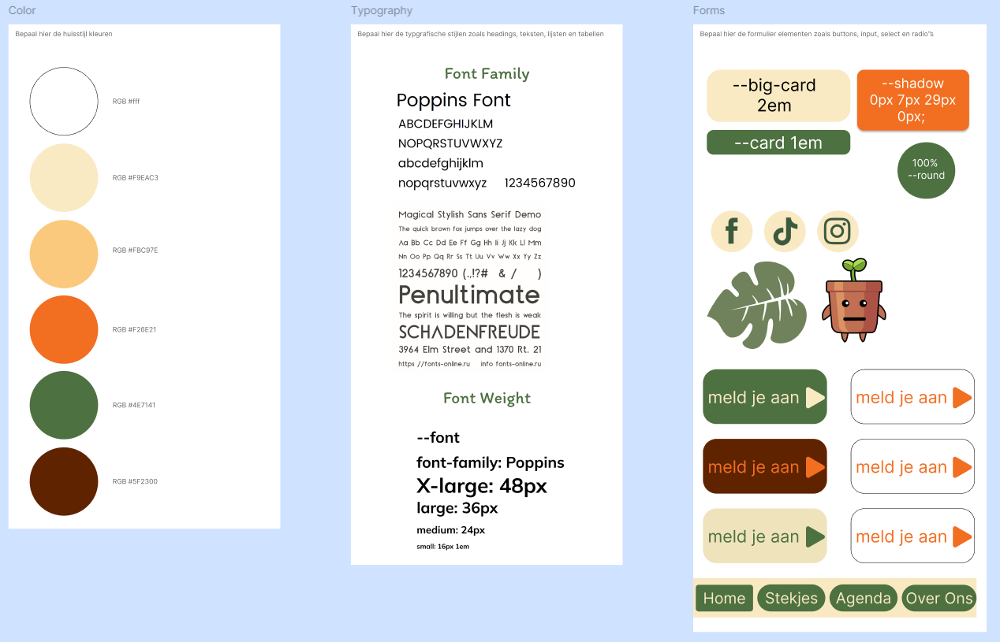
Daily checkout, vrijdag 15-11-24
Wat heb ik vandaag gedaan?
Ik heb samen met Miel en Anouar de stylesheets van de groepen DDA en Tumimundo feedback gegeven. We hebben zelf ook wat issues gekregen en daar zijn we na overleg ook gelijk mee aan de slag gegaan.
We hadden de kleuren bijvoorbeeld als --white aangegeven maar dat vonden wij wel overzichtelijk maar veel mensen vonden het onhandig dus dat hebben we aangepast, zie foto bij bewijsmateriaal.
Daarna ben ik ook begonnen met mijn eigen HTML en CSS opzetten. Ik heb de gezamelijke stylesheet gekoppeld aan mijn HTML bestand en hij werkt.
Daily checkout, maandag 18-11-24
Wat heb ik gedaan vandaag?
Ik heb meegedaan met de uitleg van de Look and Feel - Corporate Identity, Typografie en EM. Ik heb samen met Kate de websites van
de Correspondent en
pixelambacht bekeken en onderzocht hoe de typografie wordt gebruikt.
Ik heb zelf een font ontworpen en die toegepast op mijn i love web website. Er was een proefstudente die ik de hele dag ook een beetje heb meegenomen in wat ik heb gedaan.
Vier dingen die ik vandaag heb geleerd:
Hoe je je eigen font maakt
Hoe je je eigen font in de website kan coderen
Dat je altijd een fallback moet hebben op je lettertype, ookal is het een lettertype die altijd ondersteund word. Altijd san-serif of serif erachter zetten
Het verschil tussen san-serif en serif. san serif heeft geen dingetjes aan het einde van de letter
Bewijsmateriaal
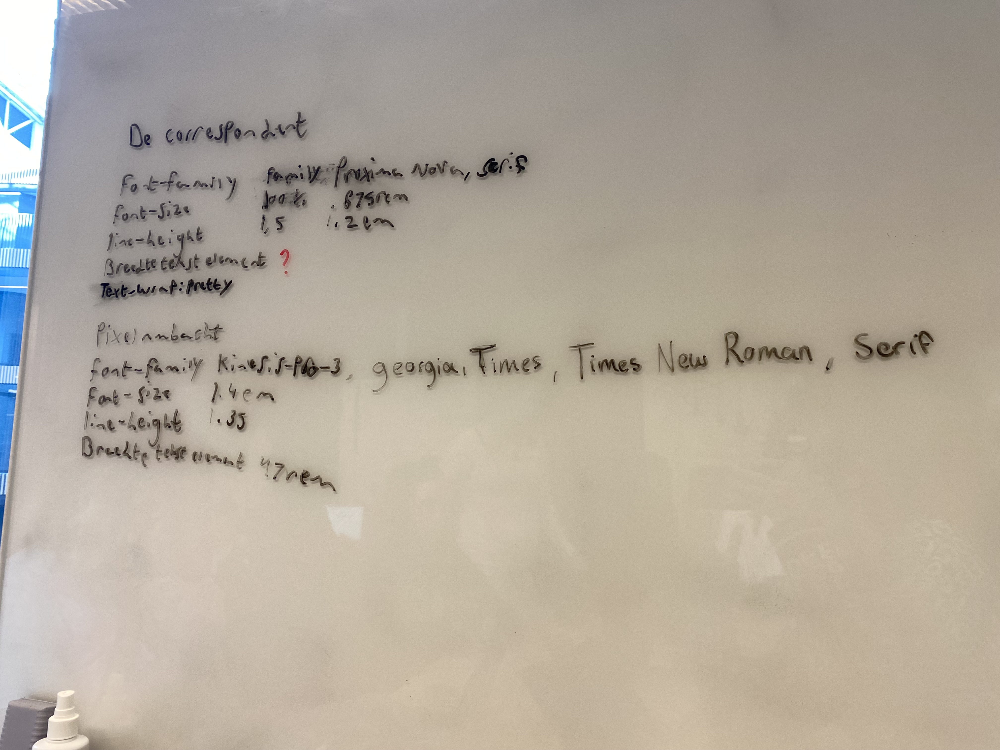
Daily checkout, woensdag 20-11-24
Wat heb ik gedaan vandaag?
Ik heb vandaag meegedaan met de workshop over formulieren. Ik heb samen met mijn tafel de verschillende inputs op het whiteboard geschreven en de bijbehoordende attributen
erbij gezocht en geschreven. Met ons bieb in bloei team hebben we in de stylesheet nog even gekeken naar de kleuren van de formulieren. Ik ben in Figma aan
de slag gegaan om een ontwerp te maken voor de Over Ons pagina van de bieb in bloei website. Ik heb een grof idee bedacht en uitgewerkt.
Twee dingen die ik heb geleerd over HTML
Hoeveel inputs er zijn voor forms
Dat je heel veel kan met een input
Daily checkout, vrijdag 22-11-24
Wat heb ik gedaan vandaag?
Ik heb een code revieuw bij @Brancovanbeek en @halima98. Daarna ben ik verder gegaan aan mn i love web, daily checkouts.
Ik heb de nieuwe daily updates en foto's bij elkaar gezocht en erin gezet.
Daily checkout, maandag 25-11-24
Wat heb ik gedaan vandaag?
Ik heb uit de workshop Layout en compositie de Law of Proximity onderzocht. Ik heb een voorbeeldje gemaakt en die gepresenteerd aan Sidney en kate.
Daarna ben ik hem gaan doorvoeren op mijn eigen project van BiebInBloei. Vooral in mijn comtact formulier was dat nog nodig volgens Koop.
law of similarity: Alles wat je brein op elkaar vind lijken, ziet je brein als 1 catogorie.
Complimenten
Gekregen van Sebastiaan: Ik vind het lief dat je me probeert te helpen!
Gegeven aan Sebastiaan: Ik vind dat je goeie inzet toont en het uit wil blijven zoeken ookal lukt het niet meteen!
Daily checkout, woensdag 27-11-24
Wat heb ik gedaan vandaag?
Ik heb met Dion naar mijn code gekeken want ik kreeg mijn gradient over de header niet werkend. We hebben gevonden waar het aan lag en gelijk opgelost.
Ik heb zijn feedback ook opgeslagen als een issue zodat ik het makkelijk weer terug kan vinden.
Daarna heb ik de Read Me geschreven van de opdracht waar ik nu mee bezig ben, de Over ons pagina van Bieb in Bloei
Ik heb ook vast bedacht wat ik morgen aan de opdrachtgever wil laten zien (figma bestanden) en wat ik aan de opdrachtgever wil vragen.
Mijn code vraag:
Mijn vraag aan Dion was dat mijn gradient niet werkte en hoe we dit konden oplossen. We hebben een aantal dingen aangepast:
class name veranderd van "header.image" naar "gradient"
kleurcode aangepast van hex naar rgba
de div van het gradient niet meer om de H1 en nav laten staan maar er een losse div van gemaakt
position: absolute gegeven aan gradient en position: relative gegeven aan de header
z-index: 1 gegeven aan de H1 en nav die onder de gradient stonden
Ik heb er samen met wat ander feedback van Dioneen issue van gemaakt.
Daily checkout, vrijdag 29-11-24
Wat heb ik gedaan vandaag?
We hebben de retrospect van sprint 4 gehad vandaag. We hebben met ons bieb in bloei team uit 1H besproken wat we hebben gedaan, wie wat heeft gedaan en hoe we het hebben gedaan. We hebben op het whiteboard
geschreven wie welke issues heeft opgepakt. Daarna zijn we bezig gegaan met de bewijslasten, een deel moesten we samen doen dus dat hebben we gedaan. Daarna is iedereen individueel verder gegaan met de andere
twee bewijslasten maar hebben we elkaar nog wel geholpen onderling.
SPRINT 5
Fix the Flow
Daily checkout, maandag 2-12-24
Wat heb ik gedaan vandaag?
We zijn vandaag begonnen met de sprint planning. Ik heb met de mensen aan mijn tafel (Rapha, Sidney, Sebastiaan en Kate) een planning gemaakt op het whiteboard.
Vanuit daar heb ik de belangrijkste dingen in mijn issues en project board gezet. Daarna gingen we verder met de workshop Fix the Flow - Interactive Website - User Interface Design.
We hebben met onze tafel onderzocht wat de feedback en feedforward van de prototype van de website tinder voor reizen.
Daarna heb ik zelf een interactief onderdeel bedacht voor op mijn website van bieb in bloei. Ik heb daar een user story en een wire flow voor gemaakt.
Daarna heb ik het infigma ook gelijk meegenomen.
Wat heb ik gedaan vandaag?
Ik heb de instructies doorgelezen, voor de rest vandaag nog geen tijd voor gehad.
Wat wil je nog leren over JavaScript?
Hoe ik mijn idee kan uitwerken, zonder het mezelf al te moeilijk te maken.
Daily checkout, woensdag 4-12-24
Wat heb ik gedaan vandaag?
Ik heb met de workshop meegedaan. Daarna heb ik met Dion, Kyan en Kerem een gesprekje gehad over de bewijslaten van de laatste retrospect.
Ik heb van krijn de tip gekeken om op codePen Jhey op te zoeken. Daar heb ik lekker inspiratie opgedaan.
Ik heb ook op mijn portflow feedback gekregen van mentor Alisa Afanasieva.
Hoe ver ben ik gekomen met de opdrachten van vandaag?
De console heb ik gedaan, het stappen plan en de comments naar code nog niet. Ik ben nog niet begonnen met de deeltaak JS fundamentals.
Daily checkout, maandag 9-12-24
Hoeveel van de 10 experimenten heb je al gemaakt?
3
Bij welke gedragscriterium past deze deeltaak en wat moet je nog doen om het te kunnen toegvoegen aan portflow?
lerend vermogen, de deeltaak afmaken en laten zien dat ik het ook in mijn eigen code kan laten zien
Daily checkout, maandag 16-12-24
Drie studievragen over navigeren en labels:
Wat wil je laten zien bij de sprintreview donderdag?
Daily checkout, woensdag 18-12-24
Wat heb ik gedaan vandaag?
Ik heb vandaag de 100dagen hva checklist ingevuld. Daarna heb ik met Rapha en Stella de mentoren beoordeeld. Daarna hebben we gekeken naar verschillende ReadMe's
en wat we daar goed en minder goed aan vonden. Ik heb verder gewerkt aan mijn eigen code, om de interactie helemaal af te maken.
Thuis heb ik mijn ReadMe nog geschreven.


 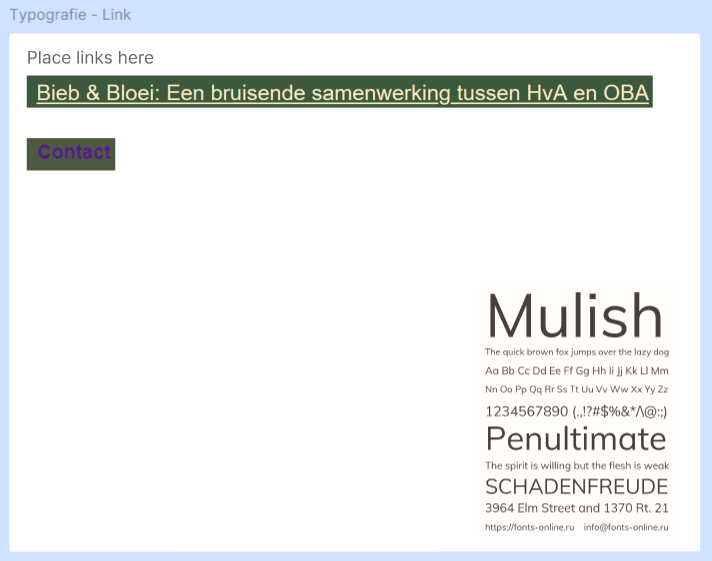
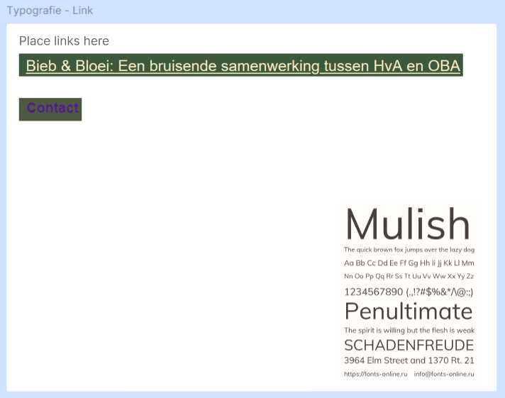
 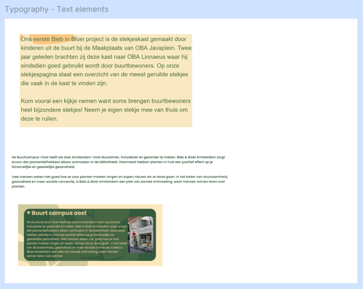
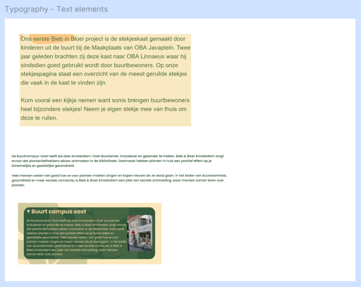
 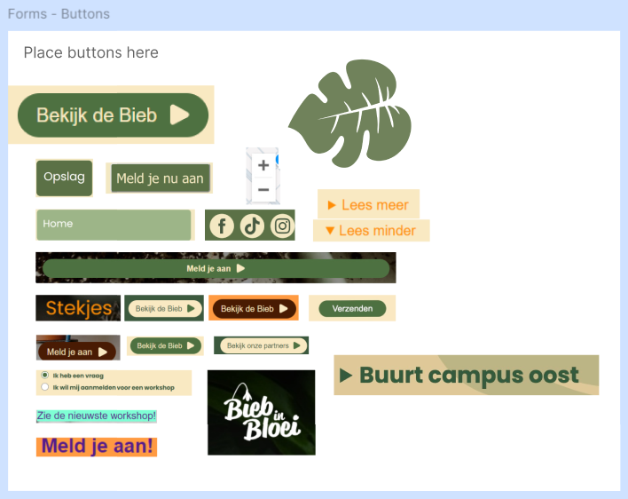
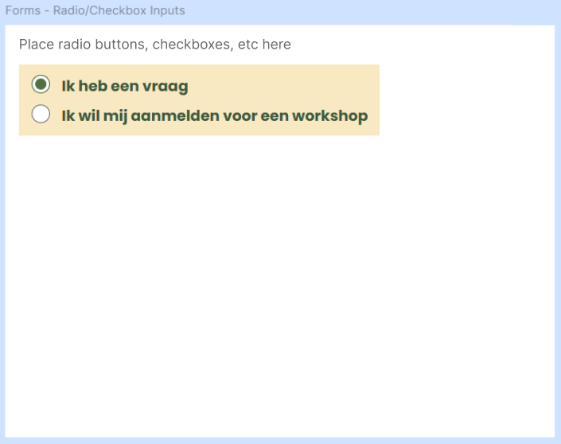
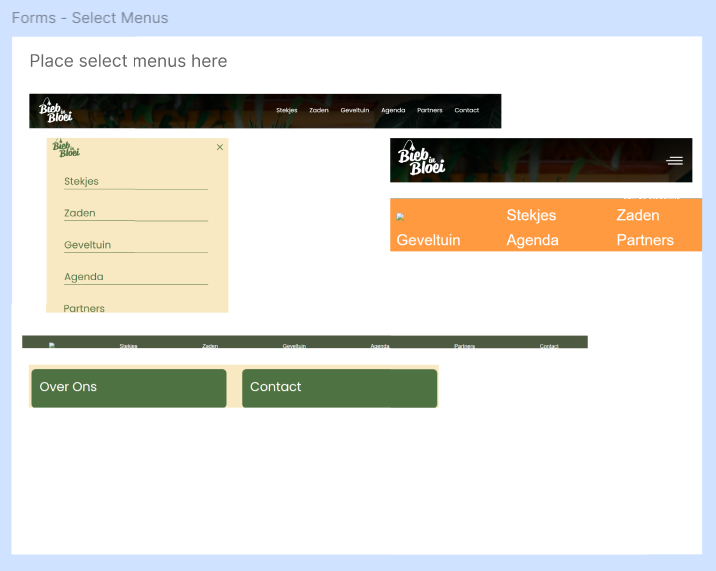
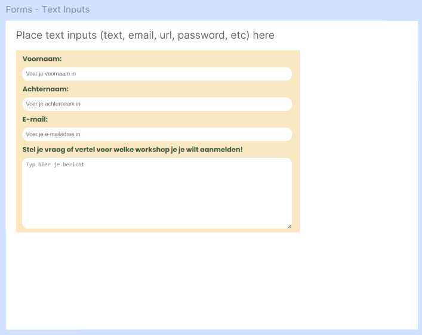
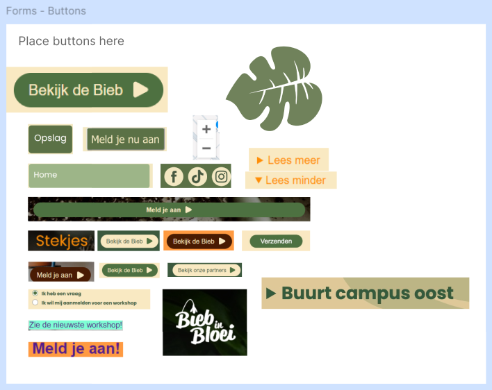
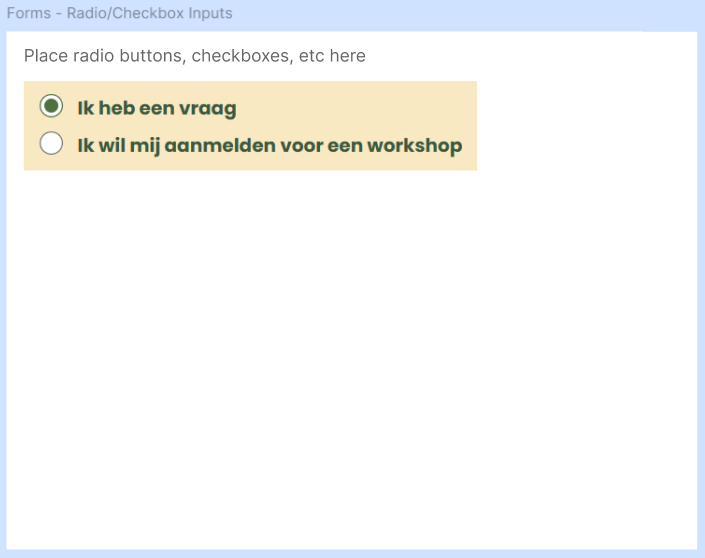
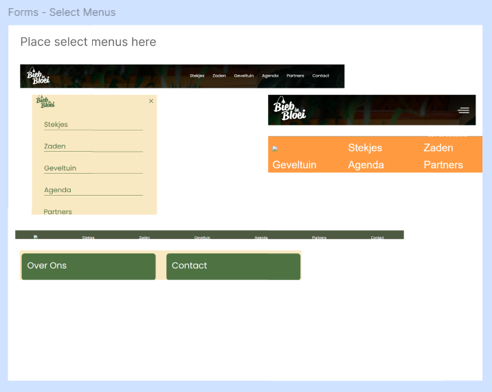
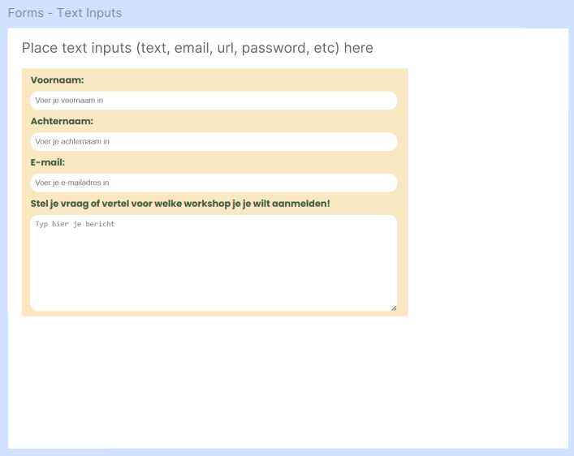